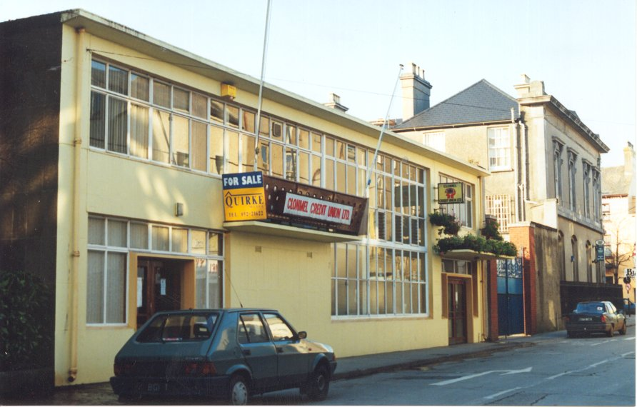

The Building
The building that now houses the South Tipperary Art Centre was built in the 1950’s.It was originally a bus depot, then it housed the offices of the Clonmel credit Union. When the Credit Union converted the old Ritz cinema into offices the building in Nelson Street again became vacant.
In 1994 the Tipperary S.R.County Council and the Clonmel Corporation purchased the old Credit Union building which would be leased to the steering committee, formed earlier that year, to become the headquarters of the South Tipperary Art Centre.
The building was totally refurbished after many months of hard work by both the staff and the Board of Directors. The Art Centre was formally opened on Friday 19th April 1996 by Ms Monica de Bigio (nee Cullen) a Clonmel born opera singer now based in Italy.

Old Credit Union Building for sale